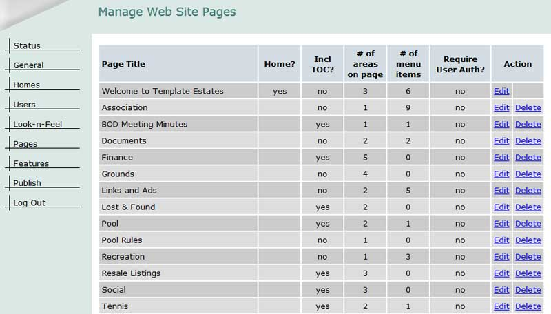
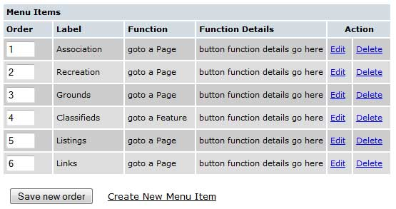

Working with Pages: {{pgpanel.msg}}
Pages are the basic building blocks of your site - think of them as documents - with text, pictures and/or clip art, and user navigation aids (menu items and links). The text is separated into page areas – you can think of page areas as paragraphs in your document. While there is a limit of 100 pages in total, there is no limit to the number of page areas any page may have.
Remember to Publish
Always remember that changes you save to your pages can be previewed by clicking the "open preview window" link in the upper right corner of your admin panel screen. When you link how it looks, remember to click the "publish" tab in your admin panel's left hand menu and click the button to confirm the publish. This will make your updates public
Accessing Your Pages
Select “Pages” from the Admin panel and a screen similar to the one shown above will be displayed. To modify an existing page, simply select “Edit” next to it. To delete a page, click the "delete" link next to it. To create a new page, scroll to the bottom of the page list and select “Create New Page.”

Main Page Properties
Once you have selected the page to modify or selected the “Create new Page” option, a page form will be displayed similar to the one shown below.
Title - Enter a title that will help you and your site visitors identify the page.Required User Authentication – Select “yes” if you wish to secure this page, i.e. require a user to be logged on to view it. Select “no” if you do not.
Additional Page Properties – Select “edit” if you would like to modify the additional page options. When you select “edit” on the initial page screen, you will see a display similar to the one shown below: Table of Contents - A table of contents is a listing of the titles of each of the page areas displayed at the top of the page. For a page with many page areas, this option can help navigation; however too many page areas can make the display confusing. Select “yes” to include a Table of Contents on this page. Select “no” to disable the Table of Contents.
Top of Page Links – Select “yes” if you would like to display a [Top of Page] link at the end of each page area (Table of Contents must also be “yes”). Select “no” to disable the Top of Page option.
Page Admin – If you would like to assign this page to another user for maintenance, select them from the drop-down menu. Only users who are marked as “Page Administrators” in their User record will be available for selection. See the Page Admin tag at left for more detail.
Set Group Authentication Limit – If you want to make this page available only to members of one or more of your defined User Groups, change the “Set User Group Authentication Limit?” from a “no” to a “yes”. You can then select any of the User Groups you have defined. As an example, if you wanted this page available only to members of the Board, and the “Board Members” group was defined in the “User Group Feature,” you would set the User Groups authentication option to a “yes” and select the “Board Members” group. For more information on setting up User Groups, see the User Groups guide.
When you are finished, click the "Save" button.
If you have created a new page, a new page area which holds the content (text and/or images) must also be created. To do that, select “Create New Page Area” and you will be able to add content to a fresh new page area. If you are modifying an existing page, select “Edit” next to the page area you want to change.
 Below, you'll see the top section of the Page Area Editing screen.
Title - Enter a title for the page area that will be displayed just above the area. Optionally, you can leave it blank if you do not want a title to appear on the page. If you choose to include a title for the page area, enter it in the “title” area on the screen. If you want to format the title, use the formatting bar just above it. You may have to roll it down, using the small arrow on the left, to make it visible. The buttons are used the same way as the buttons in the text area editor.
Below, you'll see the top section of the Page Area Editing screen.
Title - Enter a title for the page area that will be displayed just above the area. Optionally, you can leave it blank if you do not want a title to appear on the page. If you choose to include a title for the page area, enter it in the “title” area on the screen. If you want to format the title, use the formatting bar just above it. You may have to roll it down, using the small arrow on the left, to make it visible. The buttons are used the same way as the buttons in the text area editor.
Text - Enter the text you want displayed in this page area. It’s generally easiest to copy text from its original source using CTRL/C and paste it into the text area using the Paste button or CTRL/V.
A full guide to working with the toolbar is available in the "Formatting" tag at left.
The bottom section of the page area editing screen is an alternate method for inserting images into that section (the default method is using the formatting toolbar). For details on this method, click the Images tag at left.
Please Note: If you are copying from a word processor or external website, it's best to use the paste as plain text button (see the formatting guide at left). These external programs/sites can carry over hidden code that can cause layout issues on your page area. The default formatting created in the word processor will be lost, but the text itself will be copied. Once the text has been entered, you can format it by using the page area editor located just above the text area.
Below, you'll see the top section of the Page Area Editing screen.
Title - Enter a title for the page area that will be displayed just above the area. Optionally, you can leave it blank if you do not want a title to appear on the page. If you choose to include a title for the page area, enter it in the “title” area on the screen. If you want to format the title, use the formatting bar just above it. You may have to roll it down, using the small arrow on the left, to make it visible. The buttons are used the same way as the buttons in the text area editor.Text - Enter the text you want displayed in this page area. It’s generally easiest to copy text from its original source using CTRL/C and paste it into the text area using the Paste button or CTRL/V.
A full guide to working with the toolbar is available in the "Formatting" tag at left.
The bottom section of the page area editing screen is an alternate method for inserting images into that section (the default method is using the formatting toolbar). For details on this method, click the Images tag at left.
Please Note: If you are copying from a word processor or external website, it's best to use the paste as plain text button (see the formatting guide at left). These external programs/sites can carry over hidden code that can cause layout issues on your page area. The default formatting created in the word processor will be lost, but the text itself will be copied. Once the text has been entered, you can format it by using the page area editor located just above the text area.
Most pages will also have links to other pages or features on your site. The easiest way to provide the link is by adding a menu item (button) to the page. A menu item enables your site visitors to easily navigate between pages, features, or external links.

Help Text - Enter what you want your visitors to see as they hover their cursor over the button.
Function - There are three radio options:
1. “Go to a Page” - allows you to link this button to another page on your site. You simply select the page from the drop-down menu. See “Linking a Button to a Page” for more information.
2. “Go to a Feature” - allows you to link this button one of the features on your site (photo album, documents, electronic forms, etc.). You simply select the feature from the drop-down menu. A checkbox will appear titled "Go directly to a specific feature item". If you check it, a final drop down list will appear with every individual item available in that feature. Select one and your menu item will go directly there (instead of to the feature in general).
3. “Go to an External Link” - allows you to link this button to a page outside of your web site.
Once you are satisfied, select “Save”.
Creation
To create a new menu item (button), select “Create New Menu Item” and you will see a screen similar to the one shown below.
Label - Enter a short name for the button – remember that the text has to fit on your button.Help Text - Enter what you want your visitors to see as they hover their cursor over the button.
Function - There are three radio options:
1. “Go to a Page” - allows you to link this button to another page on your site. You simply select the page from the drop-down menu. See “Linking a Button to a Page” for more information.
2. “Go to a Feature” - allows you to link this button one of the features on your site (photo album, documents, electronic forms, etc.). You simply select the feature from the drop-down menu. A checkbox will appear titled "Go directly to a specific feature item". If you check it, a final drop down list will appear with every individual item available in that feature. Select one and your menu item will go directly there (instead of to the feature in general).
3. “Go to an External Link” - allows you to link this button to a page outside of your web site.
Once you are satisfied, select “Save”.
Please Note: This guide covers inserting images into areas of your site. To insert an image, you must first upload it to your site. Click here to access the section that covers that process.
Images – clip art and photos – add great visual appeal to web site, but at the expense of page load time. The larger the image, the slower the page will display in your visitor’s browser. Pictures from a scanner or digital camera are usually relatively large (from 300 kb to well over 1000 kb) and the goal is to reduce them to about 40 kb. Good image editing software will let you control two variables, the physical size of the image and the quality (the number of pixels in the image) of the image. Try reducing your picture’s size first. Most digital cameras take pictures that are 4000 pixels wide by 3000 pixels high- larger than even the biggest widescreen monitors available. Generally, images between 500 pixels wide and 800 pixels wide work perfectly well for display on the web.
As a reference, the max width of any image in this guide is 800 pixels.
Picture Location - Select left, right, above, or below to position the image in relation to the text.
Picture Dimensions - To “fine tune” the on-screen size, you can set the width and/or height values - in pixels - to force the picture to a specific screen size; set the values to 0 to use the picture’s actual size. Resizing the image here does not affect the speed of the page load – only the actual size of the image that you uploaded matters in that regard.
Once you have selected the image, select “Save and Return” to return to the Pages screen, or “Save” to save your changes and remain on the Page Area screen.
Image sizing considerations
We strongly recommend that you resize your images before uploading to your web site using any generally available image editing software (JASC Paint Shop, Adobe Photoshop, Microsoft PictureIt, etc.). If you don’t have an image editor, please see “Managing Your Web Images” for options.Images – clip art and photos – add great visual appeal to web site, but at the expense of page load time. The larger the image, the slower the page will display in your visitor’s browser. Pictures from a scanner or digital camera are usually relatively large (from 300 kb to well over 1000 kb) and the goal is to reduce them to about 40 kb. Good image editing software will let you control two variables, the physical size of the image and the quality (the number of pixels in the image) of the image. Try reducing your picture’s size first. Most digital cameras take pictures that are 4000 pixels wide by 3000 pixels high- larger than even the biggest widescreen monitors available. Generally, images between 500 pixels wide and 800 pixels wide work perfectly well for display on the web.
As a reference, the max width of any image in this guide is 800 pixels.
Inserting Images: Option 1
You can insert an image into a page area directly using the formatting toolbar that lies directly above the page area text entry field. Click the "insert image" button, shown below by a red arrow. Note the button at the right end of the bottom row- that is the button to toggle fullscreen view mode. It can be very handy when inserting images!
Clicking that will open a dialog box (if it's your first time using this option, you may have to tell your browser to allow pop ups).
The first step is to click the Browse Server button. That will open a 2nd pop up window
There are two options: Global will show you the list of images we have provided for you to use. They're just simple clip art and template images, but you might find use for some of them. Local will give you a list of images you've uploaded to your site (see the Images guide for steps on that process). Click either and you'll see this screen
Note that if you've created categories for your locally uploaded images, you'll see those category titles first- just select the category you want to browse. Once you get a list of pictures, click on the one you want to insert and you'll be taken back to the initial pop up. A preview of your image will appear in the preview window. You can change the size, add a border, or change the horizontal and vertical spacing. The "align" drop down allows you to control how the text in a page area (if any) will flow around the image. When you're satisfied, click the Ok button and your picture will be inserted.
Inserting Images: Option 2
Save any text you have before going to the “Picture File” section – shown below. If you don’t, your text changes may not be saved. To do that, scroll down and select “Save.”
Picture File - Chose “Select a Picture from Visual List” or use the drop down menu to select an image and that has already been uploaded to your image folder. If you have not uploaded any images, you will only see the global images available to all sites. Click here for details on uploading new pictures.Picture Location - Select left, right, above, or below to position the image in relation to the text.
Picture Dimensions - To “fine tune” the on-screen size, you can set the width and/or height values - in pixels - to force the picture to a specific screen size; set the values to 0 to use the picture’s actual size. Resizing the image here does not affect the speed of the page load – only the actual size of the image that you uploaded matters in that regard.
Once you have selected the image, select “Save and Return” to return to the Pages screen, or “Save” to save your changes and remain on the Page Area screen.
When working with any of the text related functions, please remember to highlight the text you want to modify before you select the editor button.
Paste as Plain Text – This button performs a paste of copied text (you can copy text by using CTRL/C) and attempts to strip out any formatting information from the copied text.
Find - This button offers an easy way to locate specific text in the area.
Replace - This button makes it easy to make text changes in the area, but only works in the current area.
Insert/Edit Image - This button is used to insert (or edit) additional graphics in the page area. The graphic file (.bmp, .jpg, .gif, or .png) must be previously uploaded. Selection of this button causes a window to open that displays the uploaded graphics. You will also see a properties screen that allows you to control the display size, the alignment (relative to any text), and border. To display the property dialog later, right click the image and select “Image Properties.” Click the Images tag at left to learn more about this button.
Insert Horizontal Line – This button is used to insert a horizontal line at your current cursor position. This is a good way to visually divide the page. You can adjust the size of the line by selecting the line and using the sizing [] handles. You can change the color of the line by selecting the line and using the “Text Color” button.
Insert Special Character – This button is used to insert a special character at your current cursor position. A dialog is displayed allowing you to select the special character.
Italic – This button is used to italicize any highlighted text.
Underline – This button is used to underline any highlighted text.
Insert/Remove Numbered List – This button is used to toggle any highlighted text into a numbered list or to delete the numbering format.
Insert/Remove Bulleted List – This button is used to toggle any highlighted text into a bullet pointed list or to delete the bullet point format.
Alignment - These four buttons control the alignment of the highlighted text. In sequence, they are: left, center, right, and block justification.
Text Color – This button is used to change the color of any highlighted text.
Text Background Color –This button is used to control the highlighted text’s background color.
Insert/Edit Link – This button creates a link: to a page on your site, to an external page, to a feature, to an anchor position in the text, or to an email address. To create a link, type the link text, highlight it, and then select the “link” button. If you do not select highlighted text, the link url itself will be displayed as the text.
Font - This selection is used to control the font face of the highlighted text. Use the drop down icon to see your options.
Size - This selection is used to control the size of the highlighted text.
Fullscreen - This button toggles the fullscreen editor view mode. Click once to enter fullscreen, click it again to go back. Remember to save your changes after working in fullscreen mode (it's easy to forget!).
Page Area Editor - Row 1
Source - Use the “Source” button to toggle between preview mode and source code mode. In source mode, you will see the html the editor generated and can change it directly. If you want to insert your own html, you must switch to “source” mode first.Paste as Plain Text – This button performs a paste of copied text (you can copy text by using CTRL/C) and attempts to strip out any formatting information from the copied text.
Find - This button offers an easy way to locate specific text in the area.
Replace - This button makes it easy to make text changes in the area, but only works in the current area.
Insert/Edit Image - This button is used to insert (or edit) additional graphics in the page area. The graphic file (.bmp, .jpg, .gif, or .png) must be previously uploaded. Selection of this button causes a window to open that displays the uploaded graphics. You will also see a properties screen that allows you to control the display size, the alignment (relative to any text), and border. To display the property dialog later, right click the image and select “Image Properties.” Click the Images tag at left to learn more about this button.
Insert Horizontal Line – This button is used to insert a horizontal line at your current cursor position. This is a good way to visually divide the page. You can adjust the size of the line by selecting the line and using the sizing [] handles. You can change the color of the line by selecting the line and using the “Text Color” button.
Insert Special Character – This button is used to insert a special character at your current cursor position. A dialog is displayed allowing you to select the special character.
Page Area Editor - Row 2
Bold – This button is used to bold any highlighted text.Italic – This button is used to italicize any highlighted text.
Underline – This button is used to underline any highlighted text.
Insert/Remove Numbered List – This button is used to toggle any highlighted text into a numbered list or to delete the numbering format.
Insert/Remove Bulleted List – This button is used to toggle any highlighted text into a bullet pointed list or to delete the bullet point format.
Alignment - These four buttons control the alignment of the highlighted text. In sequence, they are: left, center, right, and block justification.
Text Color – This button is used to change the color of any highlighted text.
Text Background Color –This button is used to control the highlighted text’s background color.
Insert/Edit Link – This button creates a link: to a page on your site, to an external page, to a feature, to an anchor position in the text, or to an email address. To create a link, type the link text, highlight it, and then select the “link” button. If you do not select highlighted text, the link url itself will be displayed as the text.
Page Area Editor - Row 3
Arrow - The small upward pointing arrow on the left is used to “roll up” the editor and make more screen real estate available. When it’s in the rolled-up position, the arrow will point downward.Font - This selection is used to control the font face of the highlighted text. Use the drop down icon to see your options.
Size - This selection is used to control the size of the highlighted text.
Fullscreen - This button toggles the fullscreen editor view mode. Click once to enter fullscreen, click it again to go back. Remember to save your changes after working in fullscreen mode (it's easy to forget!).
Remember to Publish!
Always remember that changes you save to your pages can be previewed by clicking the "open preview window" link in the upper right corner of your admin panel screen. When you like how it looks, remember to click the "publish" tab in your admin panel's left hand menu and click the button to confirm the publish. This will make your updates public
A page administrator has full administrative rights to their assigned pages. They can add, change or delete content; insert images, add menu items (buttons), etc. The primary difference between a regular site administrator and a page administrator is that they can only access the pages that have been assigned to them. Page Administrators access their pages by selecting the “Manage Page Content” link at the bottom of every page.
When a page administrator selects “Manage Page Content,” they will see a screen of all the pages to which they have access – similar to the one shown below.
We recommend that a Page Administrator navigate to their assigned page and select the link on that page. That makes using the “back” button easier for them.
It is your responsibility as the overall site administrator to ensure that Page Administrators understand how to add, change and delete content; add images and buttons; and the policies that you have adopted for appropriate content, naming conventions, new pages, etc.
Some Differences:
• A Page Administrator cannot delete a page, only edit it. If ”Create New Page” has been authorized in their user record, they will see the “Create New Page” link as in the example above.
• Since a Page Administrator cannot upload new images or documents, you will also have to establish policies and procedures for handling them. They can, however, select from images and documents that you have already uploaded.
• For a Page Administrator, the “Save and Return” button publishes the changes immediately.
It is your responsibility as the overall site administrator to ensure that Page Administrators understand how to add, change and delete content; add images and buttons; and the policies that you have adopted for appropriate content, naming conventions, new pages, etc.
Some Differences:
• A Page Administrator cannot delete a page, only edit it. If ”Create New Page” has been authorized in their user record, they will see the “Create New Page” link as in the example above.
• Since a Page Administrator cannot upload new images or documents, you will also have to establish policies and procedures for handling them. They can, however, select from images and documents that you have already uploaded.
• For a Page Administrator, the “Save and Return” button publishes the changes immediately.